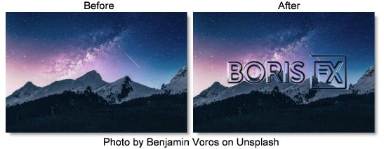

S_EmbossDistort
Description
Embosses and warps the image using the Bumps input as a relief map and also distorts the result using the Bumps as a lens image.
The S_EmbossDistort filter comes from the Emmy award winning Boris FX Sapphire filter set.
Category
Lens/Distort.
Controls
Presets
To select a preset, pick one from the Presets window.
Bumps
The bump map and lens source for the emboss.
Light Dir
The direction of the light source. Surface shading is calculated using light from this direction shining onto the Bumps input.
Brightness
Sets the brightness.
Light Color
The color of the light source creating the embossed result.
Bumps Scale
Scales the amplitude of the bump map.
Bumps Threshold
Limits the emboss effect.
Bumps Smooth
Smooths the emboss effect.
Subpixel Smooth
If enabled, the amount of pre−smoothing of the Bumps input is performed with subpixel accuracy.
Note: Subpixel Smooth has no effect unless Bumps Smooth is positive.
Hilight Brightness
The brightness of the specular highlights.
Hilight Size
The size of the specular highlights.
Distort Amount
The amount of lens warping distortion. A negative value inverts the distortion direction.
Filter
If enabled, the image is adaptively filtered when it is resampled. This produces a better quality result in small warped areas.
Wrap X & Y
Determines the method for accessing outside the borders of the image.
No
Renders black beyond the borders.
Tile
Repeats a copy of the image.
Reflect
Repeats a mirrored copy. Edges are often less visible with this method.
Crop Input
These 4 parameters, Crop Top, Crop Bottom, Crop Left, and Crop Right, allow selecting a rectangular subsection of the image to be processed. If the Wrap parameters are set to No, the exposed borders will be transparent. If the Wrap is Tile or Reflect, the image is wrapped on the new cropped borders to fill the frame. This can make it easier to avoid artifacts due to distorting an image with bad edges.
Show Light Dir
Enables/disables the on-screen control for adjusting the Light Dir parameter.